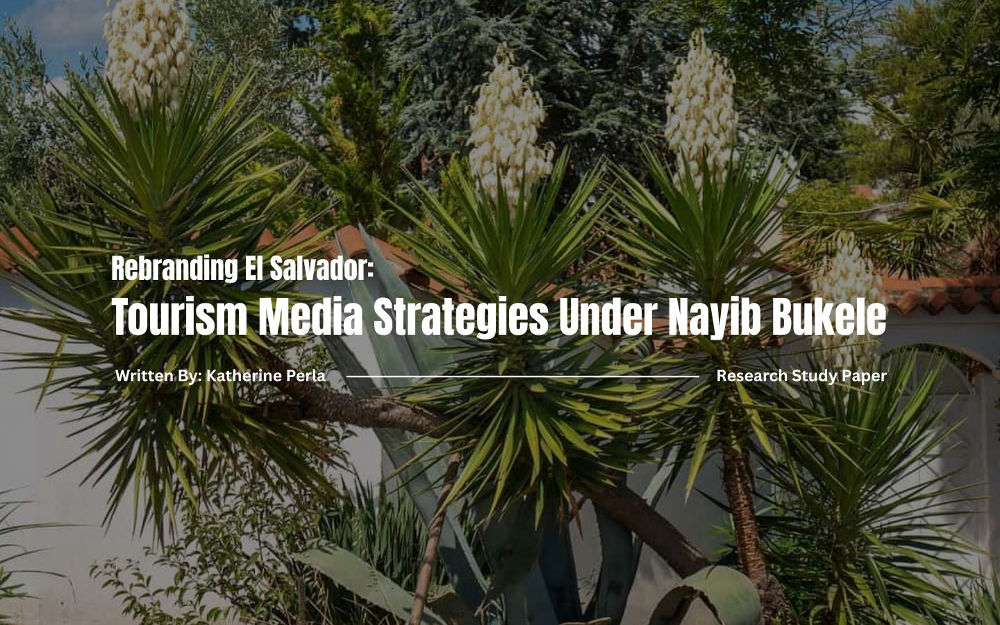

La Vida Loca (2008)
Christian Poveda’s documentary portrays the lives of MS-13 and Barrio 18 members in San Salvador.

El Salvador has always carried a complicated image for me. Growing up, it was a country that many overlooked and often felt invisible in conversation about Central American countries. When conversations were brought up it was focused always on violence, gangs, or its instability. Traveling was considered high-risk, with curfews set within cities and being outside after dark was dangerous. For many years, El Salvador wasn’t seen as a tourist destination at all, it was a place to visit family, not a place to explore the country's beauty. This perception was not accidental.
El Salvador endured a brutal civil war from 1980 to 1992, which displaced thousands of families, including many of my own relatives. Even after the war ended, gang violence continued to fill communities and the country became internationally known as one of the most dangerous places in the world. Tourism was almost nonexistent, and for many displaced Salvadorans returning home was never an option. This fear continued until 2019, where the narrative shifted dramatically. In 2019, Presidente Nayib Bukele was elected to become the new government for El Salvador. Under his administration El Salvador rebranded into one of the safest countries in the world in only 5 years. Currently, what was once a country that was defined by danger is now marketed as a country of safety and a tropical paradise. However, this shift wasn’t a result of governmental advertisements, it was highly driven by Salvadorans and organic advertisements, whose everyday observation and engagement with the country online has shifted this national image of the country, which highly influenced international curiosity of what El Salvador has to bring.
This paper will analyze four advertisements and media texts to understand how El Salvador’s national identity has been reconstructed through tourism campaigns: the documentary La Vida Loca (2008), the government ad El Salvador Great Like Our People (2010s), the Surf City campaigns (2019-present), and the YouTube documentary The World’s Highest Security Prison: CECOT (2025). Through this comparison, it will explore how media representation influences tourist behaviour, diaspora engagement, and the broader rebranding of a country. Throughout this semiotic analysis, I will draw on theories from Stuart Hall, Roland Barthes, Nancy Fraser, Tiziana Terranova, and others. Together, these frameworks will help me answer the questions: can a country’s perception be fundamentally reshaped in only five years? And what are the risks of tying national identity so closely to the narrative of safety and control?
To understand El Salvador’s current tourism campaigns, it’s important to remember the country holds a long history of conflict, migration, and insecurity. For decades, El Salvador was not seen as a tourist destination but rather a place marked by war and violence.

Looking at tourism in El Salvador and Latin America provides us with important context for understanding how a country’s image can shift over time. Many literatures highlight this tension between economic development, national identity and the politics of representation.

By drawing on key theoretical frameworks we can analyze how El Salvador’s national identity has been reconstructed through tourism. These theories will explain how advertisements and documentations function as ideological texts that shape public perception.

Throughout this section, please explore the gallery below for each advertisement analyzed in this paper. The gallery highlights La Vide Loca (2008), El Salvador: Great Like Our People (2017), the Surf City tourism campaign (2019-present), and the CECOT Mega-Prison documentary (2025).
By selecting each image, you can view the specific analysis discussed in the analysis and better understand how these advertisements contributed to the representation of El Salvador.
Christian Poveda’s documentary portrays the lives of MS-13 and Barrio 18 members in San Salvador.

A government campaign to rebrand the nation through culture, hospitality, and natural beauty.

Bukele’s initiative to globally rebrand El Salvador as a modern, adventurous, and safe tourist destination.

Government-supported documentary showcasing the security infrastructure in El Salvador.

The analysis of El Salvador’s tourism campaign demonstrates how media text functions as tools to reshape a national identity. Stuart Hall's encoding/decoding model reveals that campaigns like Surf City and the CECOT mega prison encode messages of safety and prosperity, but audiences may decode them differently depending on their social position (Hall 1980). International tourists will continue to decode Bukele campaigns as progressive for the country, however it’s evident from a Salvadoran perspective that these campaigns have an underlying false narrative of what El Salvador truly is. It seems to disregard the cultural beauty that already lives within the country of El Salvador. Instead it creates a new narrative for who is El Salvador today, which blurs the line for the actual Salvadoran living in the country as to what their national identity truly is compared to what the media is representing them as.
Roland Barthes’ concept of mythologies further clarifies how these campaigns naturalize selective identities. When displaying surfing, hospitality, and safety it creates a ‘timeless’ feature of Salvadoran culture, but erases the already built identity, violence, and migration Salvadorans endured (Barthes, 1972). By transforming the identity into a new brand, it selects certain narratives it wants to display as a way to further this new identity for outside consumers. Government campaigns construct a dominant narrative that silences counterpublics, which are Salvadorans, to ignore the inequalities, displacement, and human rights abuses in the country (Fraser, 1990). The CECOT prison displays this dynamic, by presenting a proof of safety but marginalized voices that critique this form of authoritarianism. Karl Max’s idea of commodity fetishism frames tourism branding as a form of commodification. Safety, pride, and identity are packaged as products for international visitors, hiding the social struggles behind them (Marx, 1867).
In conclusion, these frameworks display that El Salvador tourism campaigns not only function as promotional campaigns but also as an ideology. It reshapes the national identity for global consumption, but in all cases, it continues to mask the social struggle while amplifying the selective narrative the government wants to display. It blurs the line for Salvadorans finding an identity to relate to because they can no longer connect to their national identity due to the skewed perception created by the government and media. These built identities are packaged for consumption, while masking social struggles and transforming lived realities into myths. This paper shows that branding is not simply about attracting a tourist but about reshaping how the nation is imaged globally. In El Salvador’s case, the shift from violence to pride, adventure, and security illustrates how the media can overwrite decades of fear with selective narratives of prosperity. Yet, these narratives remain contested, reminding us that a national identity is never fixed but always created.